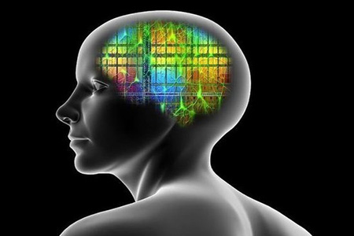
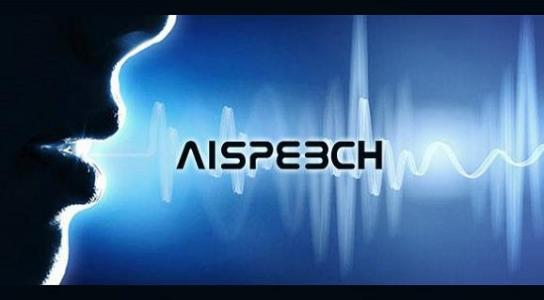

Progress
BOX 9.1 The Development and Influence of LISP
LISP has been an important programming language in AI research, and its history demonstrates the more general benefits resulting from the efforts of AI researchers to tackle exceptionally difficult problems. As with other developments in AI, LISP demonstrates how, in addressing problems in the representation and computational treatment of knowledge, AI researchers often stretched the limits of computing technology and were forced to invent new techniques that found their way into mainstream application.
Early AI researchers interested in logical reasoning and problem solving needed tools to represent logical formulas, proofs, plans, and computations on such objects. Existing programming techniques were very awkward for this purpose, inspiring the development of specialized programming languages, such as list-processing languages. List structures provide a simple and universal encoding of the expressions that arise in symbolic logic, formal language theory, and their applications to the formalization of reasoning and natural language understanding. Among early listprocessing languages (the name is based on that phrase), LISP was the most effective tool for representing both symbolic expressions and manipulations of them. It was also an object of study in itself. LISP can readily operate on other LISP programs that are represented as list structures, and it thus can be used for symbolic reasoning on programs. LISP is also notable because it is based on ideas of mathematical logic that are of great importance in the study of computability and formal systems (see Chapter 8).
LISP was successful in niche commercial applications. For instance, LISP is the scripting language in AutoCAD, the widely used computer-aided design (CAD) program from AutoDesk. But it had much broader implications for other languages. Effective implementation of LISP demanded some form of automatic memory management. Thus, LISP had critical influence far beyond AI in the theory and design of programming languages, including all functional programming languages as well as object-oriented languages such as Simula-67, SmallTalk, and, most notably, Java. This is not just a happy accident, but rather a consequence of the conceptual breakthroughs arising from the effort to develop computational models of reasoning. Other examples include frame-based knowledge representations, which strongly influenced the development of object-oriented programming and object databases; rule-based and logic-programming language ideas, which found practical applications in expert systems, databases, and optimization techniques; and CAD representations for reasoning with uncertainty, which have found their way into manufacturing control, medical and equipment diagnosis, and human-computer interfaces.
BOX 9.2 Dragon Systems Profits from Success in Speech Recognition
Dragon Systems was founded in 1982 by James and Janet Baker to commercialize speech recognition technology. As graduate students at Rockefeller University in 1970, they became interested in speech recognition while observing waveforms of speech on an oscilloscope. At the time, systems were in place for recognizing a few hundred words of discrete speech, provided the system was trained on the speaker and the speaker paused between words. There were not yet techniques that could sort through naturally spoken sentences. James Baker saw the waveforms—and the problem of natural speech recognition—as an interesting pattern-recognition problem.
Rockefeller had neither experts in speech understanding nor suitable computing power, and so the Bakers moved to Carnegie Mellon University (CMU), a prime contractor for DARPA’s Speech Understanding Research program. There they began to work on natural speech recognition capabilities. Their approach differed from that of other speech researchers, most of whom were attempting to recognize spoken language by providing contextual information, such as the speaker’s identity, what the speaker knew, and what the speaker might be trying to say, in addition to rules of English. The Bakers’ approach was based purely on statistical relationships, such as the probability that any two or three words would appear one after another in spoken English. They created a phonetic dictionary with the sounds of different word groups and then set to work on an algorithm to decipher a string of spoken words based on phonetic sound matches and the probability that someone would speak the words in that order. Their approach soon began outperforming competing systems.
After receiving their doctorates from CMU in 1975, the Bakers joined IBM’s T.J. Watson Research Center, one of the only organizations at the time working on largevocabulary, continuous speech recognition. The Bakers developed a program that could recognize speech from a 1,000-word vocabulary, but it could not do so in real time. Running on an IBM System 370 computer, it took roughly an hour to decode a single spoken sentence. Nevertheless, the Bakers grew impatient with what they saw as IBM’s reluctance to develop simpler systems that could be more rapidly put to commercial use. They left in 1979 to join Verbex Voice Systems, a subsidiary of Exxon Enterprises that had built a system for collecting data over the telephone using spoken digits. Less than 3 years later, however, Exxon exited the speech recognition business.
With few alternatives, the Bakers decided to start their own company, Dragon Systems. The company survived its early years through a mix of custom projects, government research contracts, and new products that relied on the more mature discrete speech recognition technology. In 1984, they provided Apricot Computer, a British company, with the first speech recognition capability for a personal computer (PC). It allowed users to open files and run programs using spoken commands. But Apricot folded shortly thereafter. In 1986, Dragon Systems was awarded the first of a series of contracts from DARPA to advance large-vocabulary, speaker-independent continuous speech recognition, and by 1988, Dragon conducted the first public demonstration of a PC-based discrete speech recognition system, boasting an 8,000word vocabulary.
In 1990, Dragon demonstrated a 5,000-word continuous speech system for PCs and introduced DragonDictate 30K, the first large-vocabulary, speech-to-text system for general-purpose dictation. It allowed control of a PC using voice commands only and found acceptance among the disabled. The system had limited appeal in the broader marketplace because it required users to pause between words. Other federal contracts enabled Dragon to improve its technology. In 1991, Dragon received a contract from DARPA for work on machine-assisted translation systems, and in 1993, Dragon received a federal Technology Reinvestment Project award to develop, in collaboration with Analog Devices Corporation, continuous speech recognition systems for desktop and hand-held personal digital assistants (PDAs). Dragon demonstrated PDA speech recognition in the Apple Newton MessagePad 2000 in 1997.
Late in 1993, the Bakers realized that improvements in desktop computers would soon allow continuous voice recognition. They quickly began setting up a new development team to build such a product. To finance the needed expansion of its engineering, marketing, and sales staff, Dragon brokered a deal whereby Seagate Technologies bought 25 percent of Dragon’s stock. By July 1997, Dragon had launched Dragon NaturallySpeaking, a continuous speech recognition program for general-purpose use with a vocabulary of 23,000 words. The package won rave reviews and numerous awards. IBM quickly followed suit, offering its own continuous speech recognition program, ViaVoice, in August after a crash development program. By the end of the year, the two companies combined had sold more than 75,000 copies of their software. Other companies, such as Microsoft Corporation and Lucent Technologies, are expected to introduce products in the near future, and analysts expect a $4 billion worldwide market by 2001.
SOURCE: The primary source for this history is Garfinkel (1998). A corporate history is available on the company’s Web site at http://www.dragonsys.com.
BOX 9.3 Pioneering Expert Systems
The DENDRAL Project was initiated in 1965 by Edward Feigenbaum (one of Herbert Simon’s doctoral students in AI); Nobel Prize-winning geneticist and biochemist Joshua Lederberg; and Bruce Buchanan, a recent recipient of a doctorate in philosophy from Michigan State University.1 DENDRAL began as an effort to explore the mechanization of scientific reasoning and the formalization of scientific knowledge by working within a specific domain of science, organic chemistry. Developed in part with an initial research grant from the National Aeronautics and Space Administration (in anticipation of landing unmanned spacecraft on other planets), but also picked up under DARPA funding, DENDRAL used a set of knowledgeor rule-based reasoning commands to deduce the likely molecular structure of organic chemical compounds from known chemical analyses and mass spectrometry data. The program took almost 10 years to develop, combining the talents of chemists, geneticists, and computer scientists. In addition to rivaling the skill of expert organic chemists in predicting the structures of molecules in certain classes of compounds, DENDRAL proved to be fundamentally important in demonstrating how rule-based reasoning could be developed into powerful knowledge engineering tools. Its use resulted in a number of papers published in the chemistry literature. Although it is no longer a topic of academic research, the most recent version of the interactive structure generator, GENOA, has been licensed by Stanford University for commercial use.
DENDRAL led to the development of other rule-based reasoning programs at the Stanford Artificial Intelligence Laboratory (SAIL), the most important of which was MYCIN, which helped physicians diagnose a range of infectious blood diseases based on sets of clinical symptoms.2 Begun in 1972 and completed in 1980, the MYCIN project went further than DENDRAL in that it kept the rules (or embodied knowledge) separate from the inference engine that applied the rules. This latter part of the MYCIN project was essentially the first expert-system shell (Buchanan and Shortliffe, 1984).3
The development of these pioneering expert systems not only constituted major achievements in AI but also gave both researchers and research funders a glimpse of the ultimate power of computers as a tool for reasoning and decision making. Moreover, the apparent success of these projects helped to touch off the rapid development of expert systems. Promoted by SAIL’s Edward Feigenbaum, expert systems became the rage in AI research in the late 1970s and early 1980s and a commercial tool in the 1980s, when corporations were seeking to embody the knowledge of their skilled employees who were facing either retirement or downsizing (Feigenbaum et al., 1988). Expert-system shells, based in large part on the “Empty MYCIN” (EMYCIN) shell, moved on to the commercial software market.
Starting in the mid-1980s, numerous start-up AI companies began to appear, many with products akin to expert systems. Many such companies came and went, but some flourished. For example, Gensym Corporation, founded in 1986 by an alumnus of the Massachusetts Institute of Technology’s Artificial Intelligence Laboratory, built a substantial business based on its G2 product for development of intelligent systems. More recently, Trilogy Development Group, Inc., went public, selling both software and services that apply rule-based reasoning and other AI methods to marketing operations. One of Trilogy’s founders (a Stanford University graduate) learned about the expert system that Carnegie Mellon University (CMU) had developed for Digital Equipment Corporation to configure its VAX computers (XCON).4 Basing their work in part on the systems that had emerged from DENDRAL and MYCIN and what they learned about XCON, Trilogy’s founders also used constraintbased equations and object-oriented programming methods, derived in part from AI research.5 Another of Trilogy’s founders applied the company’s methods to the marketing of personal computers (PCs) over the Internet. This new firm, pcOrder.com.Inc., promises to simplify the configuration of PCs and drastically lower the cost of buying (or selling) one (McHugh, 1996).
Many corporations committed substantial capital and human resources to the development of expert systems, and many reported substantial returns on these investments. Others found that, as AI pioneer McCarthy (1990) had argued, these expert systems were extremely “brittle” in that a small development in knowledge or change in practice rendered such programs obsolete or too narrow to use. In one study of AI (Office of Technology Assessment, 1985), expert systems were singled out as evidence of “the first real commercial products of about 25 years of AI research” but were also criticized for “several serious weaknesses” that demanded “fundamental breakthroughs” to overcome. But expert systems represented a failure to meet expectations as much as a failure of technology. They provided valuable help for users who understand the limitations of a system that embodied narrow domains of knowledge. One of the biggest problems with expert systems was the term itself, which implied a certain level of capability; a number of users started calling them knowledge-based systems to refer to the technology instead of the goal.
Despite these criticisms, work on expert systems continues to be published; some corporations with strong knowledge-engineering capabilities continue to report substantial savings from expert systems and have demonstrated a continued commitment to expanding their use. Expert-system shell programs continue to be developed, improved, and sold. By 1992, some 11 shell programs were available for the MacIntosh platform, 29 for IBM-DOS platforms, 4 for Unix platforms, and 12 for dedicated mainframe applications.6 A recent review of expert systems reported that the North American market for expert systems is roughly $250 million (representing about 70 percent of the total commercial AI market). Estimates suggest that more than 12,000 stand-alone expert systems are in use (Liebowitz, 1997). Moreover, small expert systems are being incorporated into other types of computer software, most of it proprietary.
SUCCESS IN SPEECH RECOGNITION
The history of speech recognition systems illustrates several themes common to AI research more generally: the long time periods between the initial research and development of successful products, and the interactions between AI researchers and the broader community of researchers in machine intelligence. Many capabilities of today’s speech-recognition systems derive from the early work of statisticians, electrical engineers, information theorists, and pattern-recognition researchers. Another key theme is the complementary nature of government and industry funding. Industry supported work in speech recognition at least as far back as the 1950s, when researchers at Bell Laboratories worked on systems for recognizing individual spoken digits “zero” through “nine.” Research in the area was boosted tremendously by DARPA in the 1970s.
DARPA established the Speech Understanding Research (SUR) program to develop a computer system that could understand continuous speech. Lawrence Roberts initiated this project in 1971 while he was director of IPTO, against the advice of a National Academy of Sciences committee.19 Roberts wanted a system that could handle a vocabulary of 10,000 English words spoken by anyone. His advisory board, which included Allen Newell and J.C.R. Licklider, issued a report calling for an objective of 1,000 words spoken in a quiet room by a limited number of people, using a restricted subject vocabulary (Newell et al., 1971).
Roberts committed $3 million per year for 5 years, with the intention of pursuing a 5-year follow-on project. Major SUR project groups were established at CMU, SRI, MIT’s Lincoln Laboratory, Systems Development Corporation (SDC), and Bolt, Beranek, and Newman (BBN). Smaller contracts were awarded to a few other institutions. Five years later, SUR products were demonstrated. CMU researchers demonstrated two systems, HARPY and HEARSAY-I, and BBN developed Hear What I Mean (HWIM). The system developed cooperatively by SRI and SDC was never tested (Green, 1988). The system that came the closest to satisfying the original project goals—and may have exceeded the benchmarks—was HARPY, but controversy arose within DARPA and the AI community about the way the tests were handled. Full details regarding the testing of system performance had not been worked out at the outset of the SUR program.20 As a result, some researchers—including DARPA research managers—believed that the SUR program had failed to meet its objectives. DARPA terminated the program without funding the follow-on.21 Nevertheless, industry groups, including those at IBM, continued to invest in this research area and made important contributions to the development of continuous speech recognition methods.22
DARPA began funding speech recognition research on a large scale again in 1984 as part of the Strategic Computing Program (discussed later in this chapter) and continued funding research in this area well into the late 1990s. Many of the same institutions that had been part of the SUR program, including CMU, BBN, SRI, and MIT, participated in the new initiatives. Firms such as IBM and Dragon Systems also participated. As a result of the controversy over SUR testing, evaluation methods and criteria for these programs were carefully prescribed though mutual agreements between DARPA managers and the funded researchers. Some researchers have hailed this development and praised DARPA’s role in benchmarking speech-recognition technology, not only for research purposes but also for the commercial market.
By holding annual system evaluations on carefully designed tasks and test materials, DARPA and the National Bureau of Standards (later the National Institute of Standards and Technology) led the standardsdefinition process, drawing the participation of not only government contractors but also industry and university groups from around the world, such as AT&T, Cambridge University (of the United Kingdom), and LIMSI (of France). The overall effect was the rapid adoption of the most successful techniques by every participant and quick migration of those techniques into products and services. Although it resulted in quick diffusion of successful techniques, this approach may also have narrowed the scope of approaches taken. Critics have seen this as symptomatic of a profound change in DARPA’s philosophy that has reduced the emphasis on basic research.
DARPA’s funding of research on understanding speech has been extremely important. First, it pushed the research frontiers of speech recognition and AI more generally. HEARSAY-II is particularly notable for the way it parsed information into independent knowledge sources, which in turn interacted with each other through a common database that CMU researchers labeled a “blackboard” (Englemore et al., 1988). This blackboard method of information processing proved to be a significant advance in AI. Moreover, although early speech-recognition researchers appeared overly ambitious in incorporating syntax and semantics into their systems, others have recently begun to adopt this approach to improve statistically based speech-recognition technology.
Perhaps more important, the results of this research have been incorporated into the products of established companies, such as IBM and BBN, as well as start-ups such as Nuance Communications (an SRI spinoff) and Dragon Systems. Microsoft Corporation, too, is incorporating speech recognition technology into its operating system (DARPA, 1997; McClain, 1998). The leading commercial speech-recognition program on the market today, the Dragon Systems software, traces its roots directly back to the work done at CMU between 1971 and 1975 as part of SUR (see Box 9.2). The DRAGON program developed in CMU’s SUR project (the predecessor of the HARPY program) pioneered the use of techniques borrowed from mathematics and statistics (hidden Markov models) to recognize continuous speech (Baker, 1975). According to some scholars, the adoption of hidden Markov models by CMU’s research team owes much to activities outside the AI field, such as research by engineers and statisticians with an interest in machine intelligence.23
Other examples of commercial success abound. Charles Schwab and Company adopted DARPA technology to develop its VoiceBroker system, which provides stock quotes over the telephone. The system can recognize the names of 13,000 different securities as well as major regional U.S. accents. On the military side, DARPA provided translingual communication devices for use in Bosnia. These devices translated spoken English phrases into corresponding Serbo-Croatian or Russian phrases. The total market for these new personal-use voice recognition technologies is expected to reach about $4 billion in 2001 (Garfinkel, 1998).